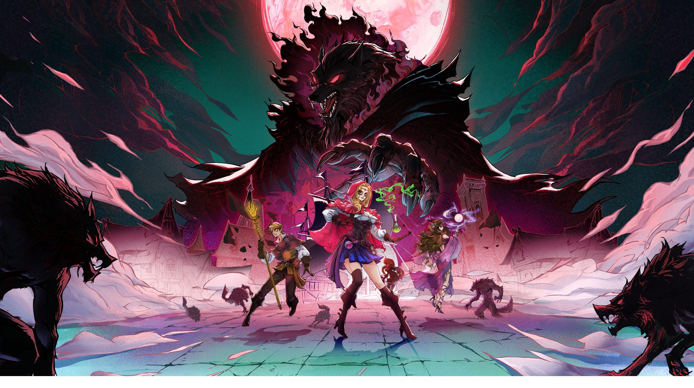
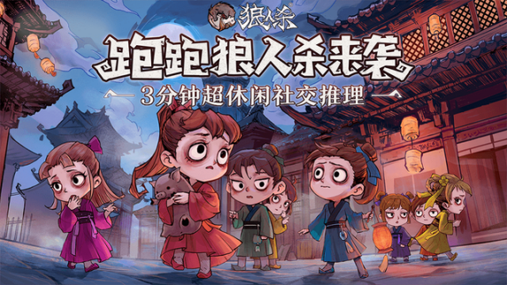
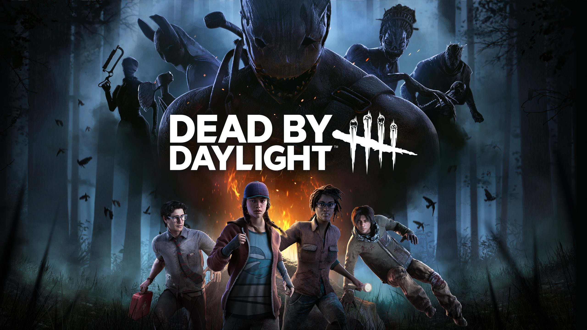
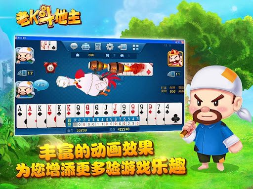

Learn More Career Games Skills Highlights Featured Projects Contact
我是一名专注于游戏服务端系统的后端工程师，长期参与在线游戏的服务端开发、基础设施建设和 live service 线上支撑。
近几年的工作重点集中在稳定性、交付效率和工程降本：包括 Kubernetes 基础设施、多云迁移、战斗服托管、异步数据链路和实时通信系统。
我更擅长把业务开发经验沉淀成平台能力，让复杂系统更稳、更容易扩展，也更适合长期维护和持续迭代。
View Blog服务端开发工程师 · 2020.11 - 至今
TypeScript / Golang / Python / Lua / Kubernetes / Docker / Redis / AWS / Aliyun / GCP
主要负责游戏服务端与相关平台能力建设，工作内容覆盖业务开发、基础设施交付、生产环境支撑和服务长期演进；推动过战斗服托管、数据库异步同步、多云迁移、实时通信等关键项目，并在多个项目中承担方案推进、代码评审和稳定性保障角色。
服务端开发工程师 · 2019.04 - 2020.11
Lua / C / Python / Skynet / MySQL / Redis
负责游戏服务端功能开发与日常维护，在项目实践中积累了线上问题处理、版本迭代和业务支撑经验。
软件开发工程师 · 2018.01 - 2019.04
C / C++ / so / dll / MFC
负责 Windows 软件与相关组件开发，也参与旧系统接口升级与维护，这一阶段完成了从桌面软件到后端方向的职业转向。




C / Golang / TypeScript / Lua / Python
Kubernetes / Docker / Linux / CI/CD / Monitoring
AWS / Aliyun / GCP
MongoDB / DynamoDB / MySQL / Redis
Claude Code / OpenCode / Codex
自 2019 年底进入游戏行业，持续从事在线游戏服务端与基础设施建设。
推动过服务端从 0 到 1 搭建，并长期承担 live service 线上稳定性保障。
参与 Kubernetes、CI/CD、监控体系和多云能力建设，持续改善交付效率和基础设施可维护性。
具备数据库迁移、异步同步链路和实时通信系统建设经验。
项目落地后实现过战斗服成本下降约 50%、数据库成本下降超过 80% 等明确收益，并获得公司技术奖。
在多个项目中承担核心推进角色，能够把问题拆成可落地方案，并持续推动关键模块演进。
Backend / Infra / Live Ops
Impact: 长期线上稳定性与交付支撑
TypeScript / Golang / Kubernetes / Redis / AWS
在长期 live service 场景下参与服务端集群部署、线上问题处理、成本优化和玩法功能开发， 持续平衡稳定性、交付效率与线上质量，并承担过服务端组长职责。
Platform Owner
Impact: 战斗服成本下降约 50%
Golang / Kubernetes / Multi-Cloud / Game Server Hosting
为解决战斗服成本高、激活和扩缩容效率不足的问题，设计并推进对标 AWS GameLift 的战斗服托管平台。 平台支持多云部署、弹性调度与更快激活，落地后帮助项目显著降低战斗服成本。
Architecture / Core Implementation
Impact: 数据库成本下降超过 80%
Golang / Async Pipeline / Stateless Server
面向无状态服务架构设计并实现异步数据库同步器，承接玩家数据异步落地链路。 配合新架构落地后，降低数据库成本，并提升服务拆分后的数据一致性和可维护性。
Migration Lead
Impact: 多云迁移流程标准化
AWS / GCP / Kubernetes / Delivery Process
主导服务器从 AWS 迁移至 GCP，负责技术调研、集群搭建、迁移执行与流程规范制定。 为后续多云能力建设和基础设施切换打下标准化基础。
Realtime Backend
Impact: 强化长连接与状态同步链路
Golang / Long Connection / Presence / Queue
使用 Golang 独立重写实时通信服务，支持长连接消息推送，并重构消息队列与在线状态判断链路。 强化非实时架构下的掉线、离线与状态同步处理能力。
Data Migration
Impact: 核心数据链路平滑切换
DynamoDB / MongoDB / Full Sync / Incremental Sync
主导数据库从 DynamoDB 迁移到 MongoDB，建设全量同步、增量同步与数据校验能力。 推进核心数据链路平滑切换，为后续架构演进预留了更大的成本和扩展空间。
负责服务端集群部署与维护、疑难问题处理、成本优化，以及服务端与客户端玩法开发。在长期 live service 场景下兼顾稳定性、交付效率与线上质量，也承担过服务端组长职责。
自研对标 AWS Gamelift 的战斗服托管平台。作为负责人，负责架构设计、工作分配、进度把控及核心模块维护迭代，支持多云部署与更快的激活、扩缩容能力，落地后帮助项目节省约 50% 战斗服成本，并获得公司技术奖。
面向无状态服务器架构的异步数据库同步器。负责架构设计及核心实现，支撑玩家数据异步落地链路，配合新架构后帮助项目将数据库成本降低超过 80%，并获得公司技术奖。
主导服务器从 AWS 迁移至 GCP，负责技术调研、Kubernetes 集群搭建、迁移执行与流程规范制定，推动多云能力建设并降低后续基础设施切换成本。
使用 Golang 独立重写实时通信服务器，支持长连接消息推送，并优化架构、消息队列与在线状态判断能力，强化非实时架构下的掉线与离线判断链路。
主导数据库从 DynamoDB 迁移到 Mongo，负责全量同步、增量同步与数据校验能力建设，推进核心数据链路迁移落地，并为后续架构演进打下基础。
当前在研项目保密，不在此处展示。